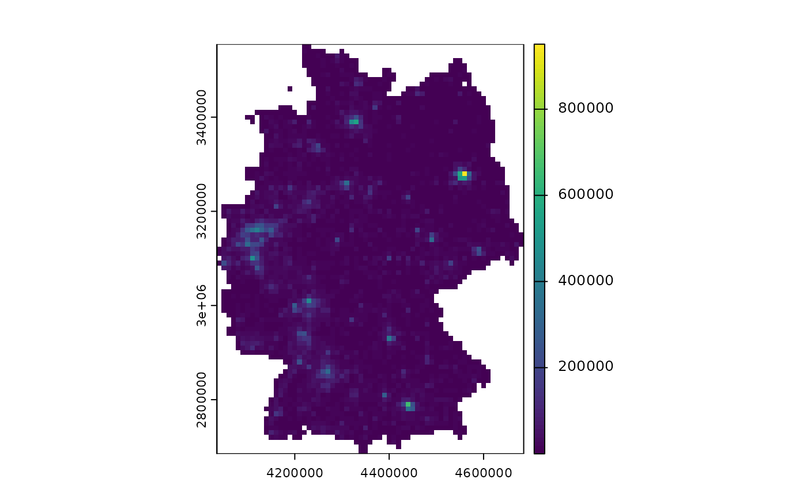

Retrieve the values and coordinates of gridded features from the censuses 2011 and 2022.
When we are talking about a
feature, we talk about an indicator aggregated to grid cells, e.g., age or the number of dwellings.
category, we talk about the discrete classifications of features, e.g., ages 10 to 19, 20 to 20, 30 to 39, etc.
Both feature and category have to be provided to uniquely identify a dataset.
Usage
z22_data(
feature,
categories = NULL,
year = 2022,
res = "1km",
all_cells = FALSE,
normalize = FALSE,
rasterize = FALSE,
as_sf = FALSE,
update_cache = FALSE
)Arguments
- feature
A grid feature. See
z22_featuresfor a list of available features. You can pass both English names and legacy names (i.e., variable names from the 2011 census).- categories
One or multiple feature categories. See
z22_categoriesfor a list of available categories. IfNULL, retrieves all categories for a given feature. Generally, the more categories are selected, the longer the download.- year
Census year. Currently, only 2011 and 2022 are available. Defaults to 2022.
- res
Resolution of the grid dataset. Can be
"100m","1km", or"10km". Ifyearis 2011,"10km"is not available and some features are only available at certain resolutions.- all_cells
If
TRUE, joins the retrieved attribute with the complete grid fromz22_grid. Otherwise, the attribute grid will contain only those grid cells with one or more recorded units. Defaults toFALSE, because loading the grid and joining with it is computationally expensive.- normalize
If
TRUEandfeatureis a counted feature, computes shares by dividing the counts by the total number of units in the grid cell. The type of unit depends on the theme of the feature, e.g., if the feature is in theme "Buildings", the feature counts are divided by the total number of buildings. Note that this operation requires an additional download (the total number of units). Defaults toFALSE.- rasterize
If
TRUEand theterrapackage is installed, converts the attribute coordinates to aSpatRaster.- as_sf
If
TRUEand thesfpackage is installed, converts the attribute coordinates to ansftibble.- update_cache
By default, both functions cache attribute files for the remainder of the R session. They are downloaded to a temporary directory and - if the file to download already exists - are recovered from the cache. In other words, when rerunning the same request multiple times, the subsequent calls should be much faster. If
TRUE, disables caching for this call and overwrites the currently cached attribute file (if any) with a fresh one. Defaults toFALSE, i.e. always cache.
Value
A tibble, SpatRasterDataset or
sf tibble depending on the rasterize
and as_sf arguments.
If a tibble is returned each category in categories is stored in
a column. If a SpatRasterDataset is returned, each category is a
named layer.
Details
Half of the grids cell width is added to each coordinate in the dataset internally. According to the INSPIRE guidelines, coordinates always represent the South-west of the grid cells. Centroids represent the geographic location of grid cells better which is why they are used.
Examples
# Get gridded population
pop <- z22_data("population", res = "10km", rasterize = TRUE)
terra::plot(pop$cat_0)

# Get data about the number of people born in a EU27 country
z22_data("birth_country", categories = 21, res = "1km")
#> # A tibble: 210,556 × 3
#> cat_21 x y
#> <int> <dbl> <dbl>
#> 1 3 4337550 2689550
#> 2 NA 4341550 2689550
#> 3 NA 4341550 2690550
#> 4 NA 4340550 2691550
#> 5 3 4341550 2691550
#> 6 NA 4341550 2692550
#> 7 3 4344550 2692550
#> 8 3 4340550 2693550
#> 9 NA 4341550 2693550
#> 10 NA 4343550 2693550
#> # ℹ 210,546 more rows